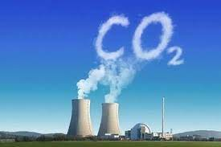
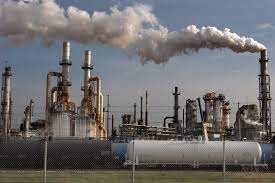
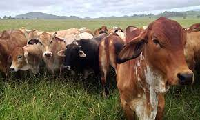

Most scientists agree that man-made climate change, or global
warming, began in earnest during the industrial revolution,
which occurred between the 18th and 19th centuries. This occurred,
they say, as a result of a large number of greenhouse gases released
into the atmosphere. However, in 2008, researchers from the University
of Wisconsin-Madison concluded that global warming began as many as
8,000 years earlier with the advent of agriculture and deforestation.
Greenhouse gases released into the atmosphere during and since the industrial
revolution remain trapped, where they continue to accumulate. They also
serve to retain heat, which has had a series of effects on the planet’s
climate.
Early in the 20th century, most scientists and industrial leaders believed
it was possible to alter a local climate but not the global climate, based
on local activities. Although some scientists, including Svante Arrhenius,
a Swedish chemist, saw the possibility for global climate change, they were
dismissed as being alarmists.
Beginning in the late 1950s, scientists observed a steady increase in carbon
dioxide in the atmosphere based on precise measurements. By the 1980s, the
global temperature had begun to increase to such a degree that the media
heard about it and began to spread the news.
-

-
Generating Power:
Generating electricity and heat by burning fossil fuels such as coal, oil and natural gas causes a large chunk of global emissions. Because Most electricity is still produced from fossil fuels.

-
Manufacturing Good:
Manufacturing and industry produce emissions, mostly from burning fossil fuels to produce energy for making things like cement, iron, steel, electronics, plastics, clothes and other goods. Mining and other industrial processes also release gases. -
deforestation:
Cutting down forests to create farms or pastures, or for other reasons, causes emissions, since trees, when they are cut, release the carbon they have been storing. Since forests absorb carbon dioxide, destroying them also limits nature’s ability to keep emissions out of the atmosphere. -
Overconsumption:
Your home and use of power, how you move around, what you eat and how much you throw away all contribute to greenhouse gas emissions. So does the consumption of goods such as clothing, electronics and plastics.

-
Producing Food:
Producing food requires energy to run farm equipment or fishing boats, usually with fossil fuels. Growing crops can also cause emissions, like when using fertilisers and manure. Cattle produce methane, a powerful greenhouse gas. And emissions also come from packaging and distributing food.